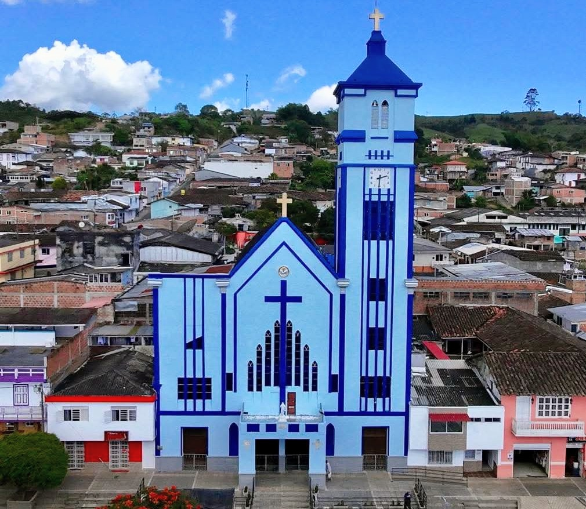

Parroquia La Inmaculada Concepción
Parroquia La Inmaculada Concepción
Parroquia La Inmaculada Concepción
Parroquia La Inmaculada Concepción
Aqui puedes conocer sobre los origenes y los cambios que ha tenido nuestra parroquia a travez de los años

Nuestra historia eclesiástica comenzó de manera humilde a finales del siglo XIX. En el año 1896, nuestra comunidad recibió la primera asistencia espiritual con la llegada del Presbítero Luis Felipe Vélez. A él le siguieron el Presbítero José Joaquín Hoyos y el Presbítero Manuel de J. Maza. Fue en el mes de diciembre de 1900 cuando el Presbítero José Joaquín Torrijos celebró nuestra primera misa. Esta eucaristía no se hizo en un gran templo, sino bajo un humilde cobertizo de paja, a unos treinta metros arriba de la plaza principal. Pero nuestros antepasados soñaban con algo más grande. Querían una Capilla. Para recolectar fondos, los vecinos organizaron rifas y bazares. Entre estas actividades, destaca la famosa anécdota de la "panocha de cuarenta libras", una gigantesca arepa de choclo elaborada por doña Rufina Castaño de Toro, cuya rifa fue un éxito rotundo. Con esos esfuerzos y la licencia del Arzobispo de Popayán, el doctor Manuel José Caycedo, en 1901 se iniciaron los trabajos de construcción bajo la dirección de don Ricardo Alzate. Ese mismo año, recibimos la primera misión de los Padres Redentoristas y la capilla fue consagrada a Nuestra Señora del Perpetuo Socorro. Finalmente, el 31 de julio de 1906, el Padre Rogerio Santibáñez presidió la bendición de nuestra primera Capilla. A partir de ahí, vinieron años de grandes hitos para nuestro pueblo: El primero de agosto de 1906, Versalles fue inaugurado oficialmente como Viceparroquia. El Presbítero Marco Antonio Tobón se encargó del caserío desde mediados de ese mismo año. El momento cumbre llegó el 22 de agosto de 1915. En esa fecha, con ocasión de la segunda visita pastoral del Obispo de Cali, el doctor Heladio Posidio Perlaza, Versalles fue declarado oficialmente PARROQUIA. El primer párroco designado fue el Presbítero Manuel de J. Maza. Sin embargo, hermanos, ninguna obra de Dios está exenta de tribulaciones. A través de los años, nuestros sacerdotes lideraron no solo la construcción de muros, sino también de la moral, como lo hizo el Padre Guillermo Quintana enfrentándose valientemente a las malas costumbres de la época. La naturaleza también nos puso a prueba: un fuerte temblor deterioró gravemente la torre de la iglesia, obligando al párroco José Andrés Motoa a demolerla totalmente. Años después, bajo el liderazgo del Presbítero Ángel María Camacho, se contrataron los servicios del arquitecto belga Alfredo Molina Vega para diseñar una nueva torre y frontis. Pero la tragedia nos golpeó de manera impensable. El 17 de mayo de 1956, un pavoroso incendio destruyó el nuevo Templo Parroquial, salvándose de las llamas únicamente la estructura de la torre. ¿Se rindió Versalles? ¡Jamás! Tan solo cuatro meses después, bajo la incansable labor del Presbítero Luis Alfonso Penilla M., iniciaron los trabajos de reconstrucción. El 17 de octubre de 1957, con la ayuda del maestro constructor Luis Eduardo Correa y el tesón de todo el pueblo, se concluyó la primera etapa de esta monumental obra. La culminación de este esfuerzo fue un templo magnífico, con un costo de $233,546.51. En la inauguración, presidida por el señor Obispo de la Diócesis de Cali, monseñor Julio Caycedo Téllez, la parroquia cambió de advocación y fue consagrada al Inmaculado Corazón de María.
También puedes mencionar los sacerdotes que han servido en la parroquia y las actividades pastorales que se realizan.